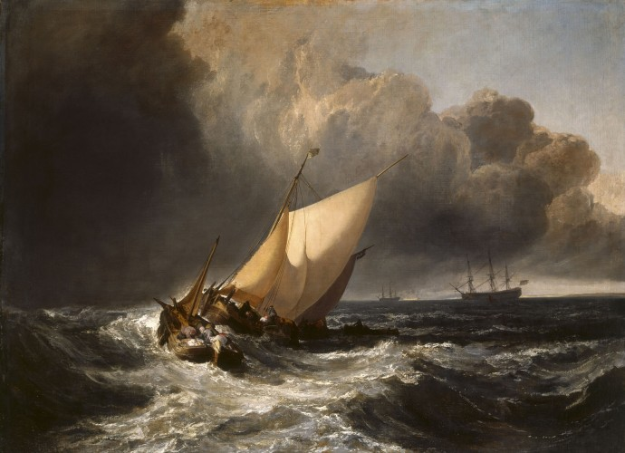
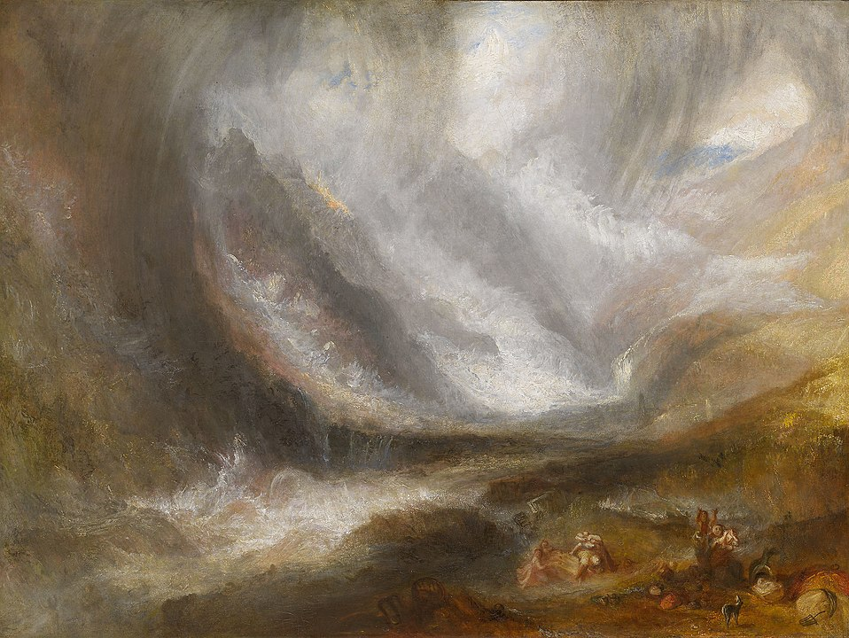
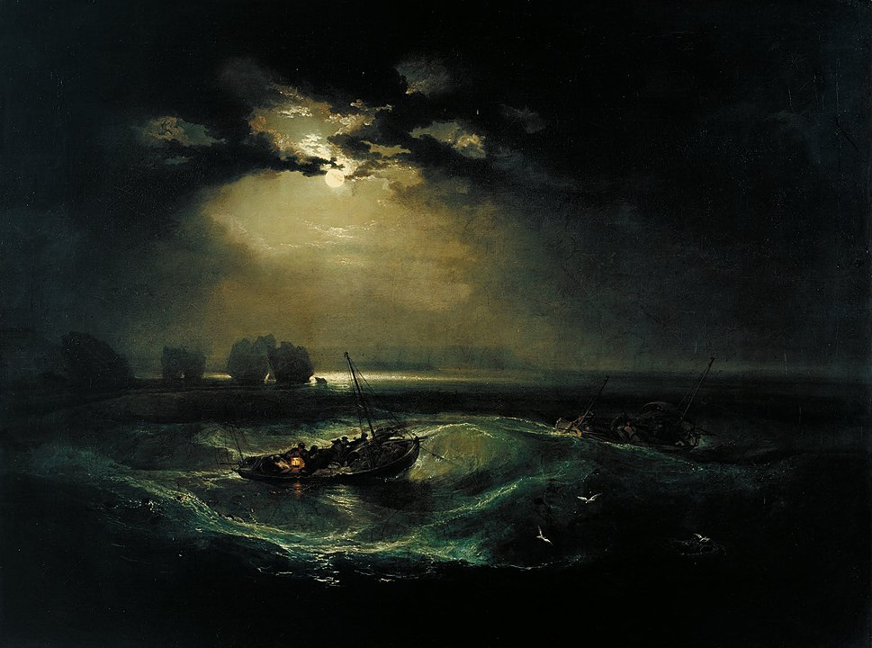
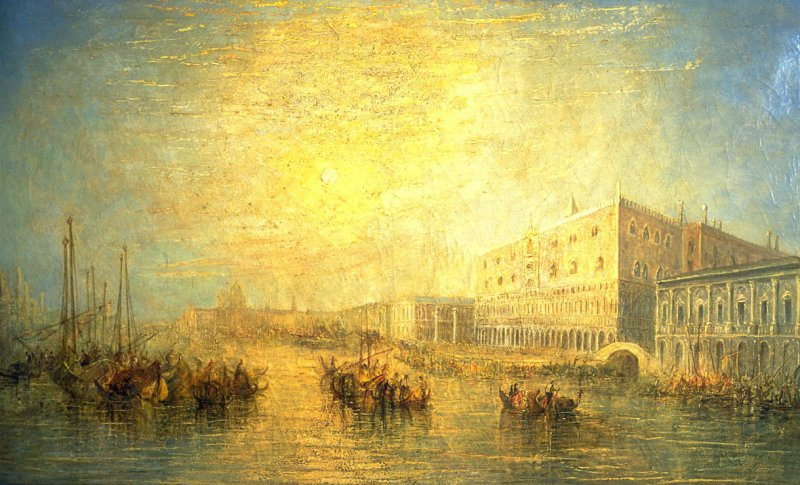
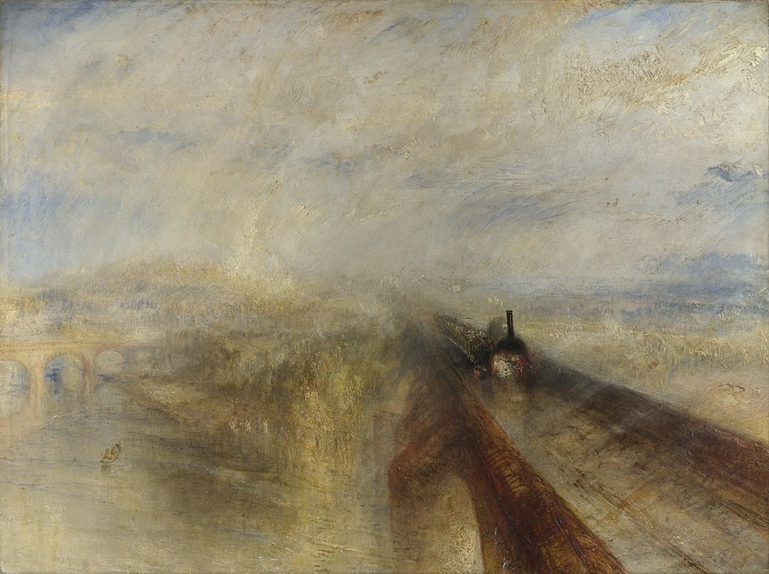
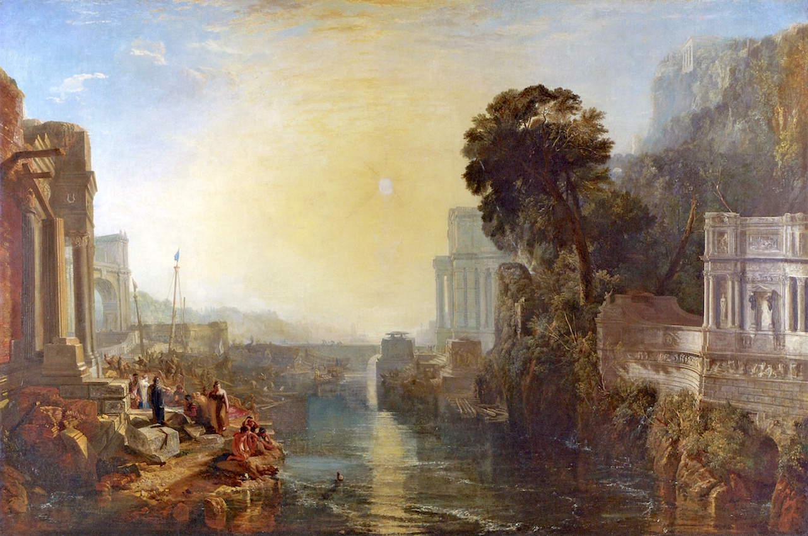

William Turner, View of Ehrenbreitstein (1835)
Joseph Mallord William Turner (1775-1851) is one of Great Britains most renowned artists. He is known for his quite bold exaggeration of realism, maritime scenes and portrayal of bad wheather. He had a paritcular fondness of depicting architectural works. In this gallery, we shall try to get a grasp of Turner's perspective on art, his artistic portoflio and his reflections on contemporary times.
This painting portrays a scene form lord Byron's poem Childe Harold. The poem is about a young man who is trying to find his place in the world.
The Fighting Temeraire (1839)
This is Joseph Turner's most famous painting. It offsets the steamship's steam with the sails in the background.
The scene is set at The Battle of Trafalgar (1805), one of Britain's most iconic battles. The renowned 'Crossing the T' tactic and its context of the Napoleonic Wars are among the things that brought this maritime battle to mythic proportions in Britain. It may be among the reasons why The Fighting Temeraire was chosen as the nation's favorite painting in 2005.

Dutch Boats in a Gale (1801)
Joseph Turner was particularly fond of the forces of nature. This painting depicts a group of small boats struggling in rough seas.
Snow Storm: Hannibal and His Army Crossing the Alps (1812)
Some of Turner's paintings include rather realistic natural events (such as the gale portrayed in the previous image). But, paintings such as the one we see on this slide, show that Turner liked to exaggerate the workings of nature at times.

Valley of Aosta: Snowstorm, Avalanche and Thunderstorm (1836-7)
Another painting that showcases how some of Turner's paintings exaggerate the gravitude of natural phenomena.

Fishermen at Sea (1796)
At this point, you may notice that Turner made quite many portraits that are set at sea. And you would be right in assuming that Turner is well known for that maritime theme.
The painting that you see here is one of Turner's first oil paintings. Turner was not the first to portray boats in the moonlight, but I think this painting is rather unique. It is quite rare to see a painting that is as black as this one. Yet, Turner is still able to harmonize the colors in such a way that the scene looks rather realistic to me.
In any case, this painting adds to Turner's portfolio of paintings that showcase natural phenomena at sea.

The Grand Canal, Venice (c. 1830)
As many paintings in this slideshow examplify, Turner liked to amplify natural phenomena. This portrayal of a susnet over the Grand Canal in Venice focuses on the sun and its rays. But, they seem rather exaggerated and are setting a certain atmosphere in this painting.
The BBC wrote a stellar article about the way in which J. Turner 'set painting free' through his bold exaggerations of light and other natural elements. They claim that he helped shape modern art.
Norham Castle: Sunrise (c. 1798)
In 1797, Turner visited the county of Northumberland. This trip inspired him to create the painting Norham Castle: Sunrise. This stronghold lies by the river Tweed, on the Anglo-Scottish border.
J.M.W. Turner was blessed with financial freedom. That is why he could use the summers to travel, and make sketches. He then used winters to turn these sketches into finished paintings.

Rain, Steam and Speed – The Great Western Railway (1844)
J.M.W. Turner painted at a time that Great Britain was industrializing. Trains such as the one deicted on this image became one of the hallmarks of this rapidlly mechanizing world.
Turner is praised for giving the spectators of his paintings the impression that the subject is moving; whether it be a boat in rough waters or this speeding train, Turner was a master in creating this mirage.
The Slave Ship (1840)
Another way in which Turner portrayed a mark of the time on his canvas is depiction of this slave ship. It shows the agony of those (alive and dead) who were thrown overboard and triggers onlookers to question the morality of slavetrade. You are welcome to click on the image to observe it in a new tab.
It coincided with a contemporary societal debate in Great Britain; people were looking back on a shameful period of slavetrading. The gruesome events that occured on the slave ship 'Zong' inspired Turner to make this painting.

Dido Building Carthage (1815)
This painting depicts the mythic creation of Carthage by queen Dido, the lover of Aeneas. According to myth, Dido laid out a circle of cow hides to signify the expanse of the city before it came to be.
Turner's incorporation of classic architecture hints towards his lifelong interest in the portrayal of architectural works.
The Decline of the Carthaginian Empire (1817)
If you compare this painting to the previous one, you may notice that it incorporates much darker areas and hues. That is because the earlier painting portrays the birth of Carthage, and this one portrays its decline.
The setting sun casts long shadows, and the dark area in the bottom right seems to be expanding and and making its literal dark mark on the city; it is making its way from the sea onto the land and devoids all that is on its path from light (click on the image to expand it in a new tab).
I like to think that this destructive shadow that slowly devours the city exemplifies the destructive power from the sea yet again. We have seen how turner portrayed the water's immense strength in many of his paintings. Perhaps it could (partly) explain why this dark Carthaginian leper comes from the sea then. Alternatively, it could hint towards other maritime powers that overthrow Carthage's prowess by means of their maritime strength. (End of Gallery)